library("yulab.utils")
library(ggplotify)(PART*) Part IV: Miscellaneous topics
ggtree Utilities
Facet Utilities
facet_widths
Adjusting relative widths of facet panels is a common requirement, especially for using geom_facet() to visualize a tree with associated data. However, this is not supported by the ggplot2 package. To address this issue, ggtree provides the facet_widths() function and it works with both ggtree and ggplot objects.
library(ggplot2)
library(ggtree)ggtree v4.1.1.003 Learn more at https://yulab-smu.top/contribution-tree-data/
Please cite:
Shuangbin Xu, Lin Li, Xiao Luo, Meijun Chen, Wenli Tang, Li Zhan, Zehan
Dai, Tommy T. Lam, Yi Guan, Guangchuang Yu. Ggtree: A serialized data
object for visualization of a phylogenetic tree and annotation data.
iMeta 2022, 1(4):e56. doi:10.1002/imt2.56library(reshape2)
set.seed(123)
tree <- rtree(30)
p <- ggtree(tree, branch.length = "none") +
geom_tiplab() + theme(legend.position='none')
a <- runif(30, 0,1)
b <- 1 - a
df <- data.frame(tree$tip.label, a, b)
df <- melt(df, id = "tree.tip.label")
p2 <- p + geom_facet(panel = 'bar', data = df, geom = geom_bar,
mapping = aes(x = value, fill = as.factor(variable)),
orientation = 'y', width = 0.8, stat='identity') +
xlim_tree(9)
facet_widths(p2, widths = c(1, 2))Warning in x[i] <- value: number of items to replace is not a multiple of
replacement length
It also supports using a name vector to set the widths of specific panels. The following code will display an identical figure to Figure ?fig-facetWidthA.
facet_widths(p2, c(Tree = .5))The facet_widths() function also works with other ggplot objects as demonstrated in Figure ?fig-facetWidthB.
p <- ggplot(iris, aes(Sepal.Width, Petal.Length)) +
geom_point() + facet_grid(.~Species)
facet_widths(p, c(setosa = .5))Warning in x[i] <- value: number of items to replace is not a multiple of
replacement length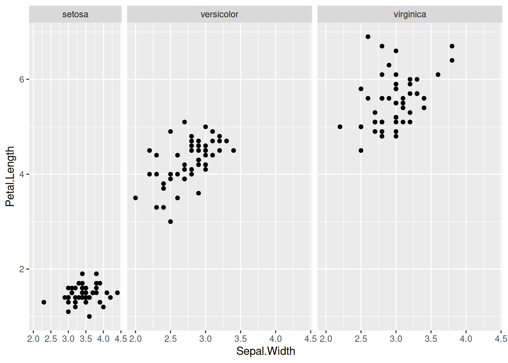
Warning in x[i] <- value: number of items to replace is not a multiple of
replacement length
Warning in x[i] <- value: number of items to replace is not a multiple of
replacement length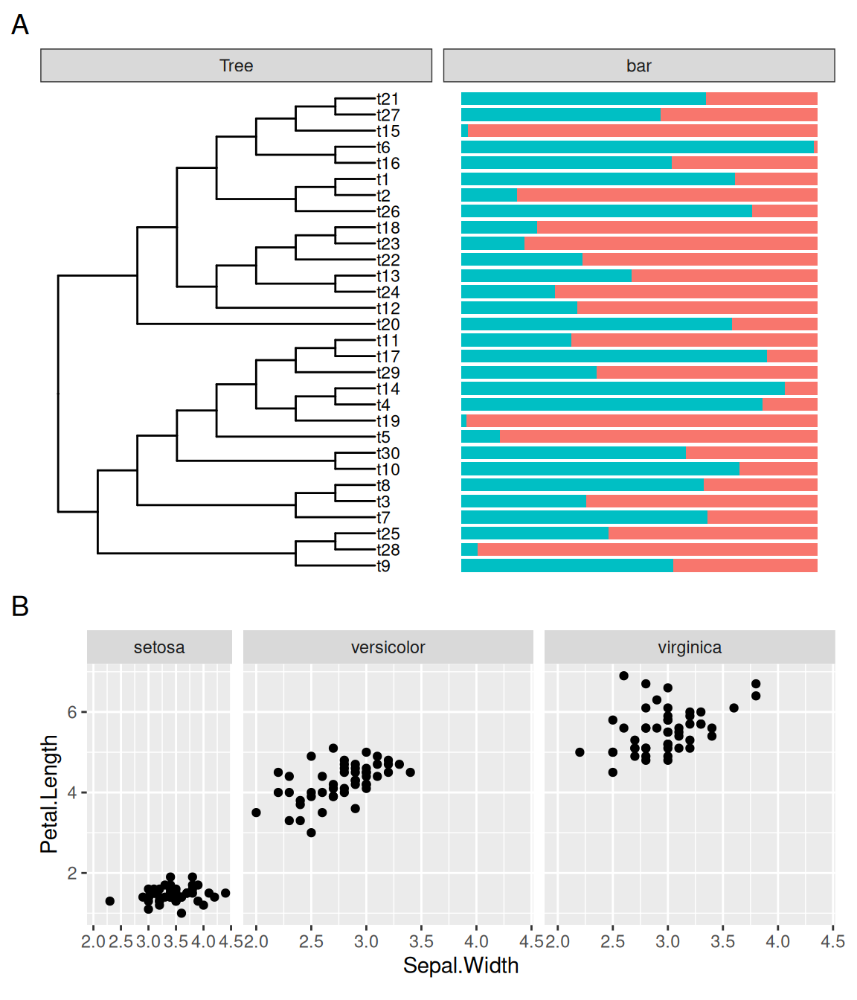
facet_widths() function works with ggtree (A) as well as ggplot (B).facet_labeller
The facet_labeller() function was designed to relabel selected panels (Figure ?fig-facetLab), and it currently only works with ggtree objects (i.e., geom_facet() outputs). A more versatile version that works with both ggtree and ggplot objects is implemented in the ggfun package (i.e., the facet_set() function).
facet_labeller(p2, c(Tree = "phylogeny", bar = "HELLO"))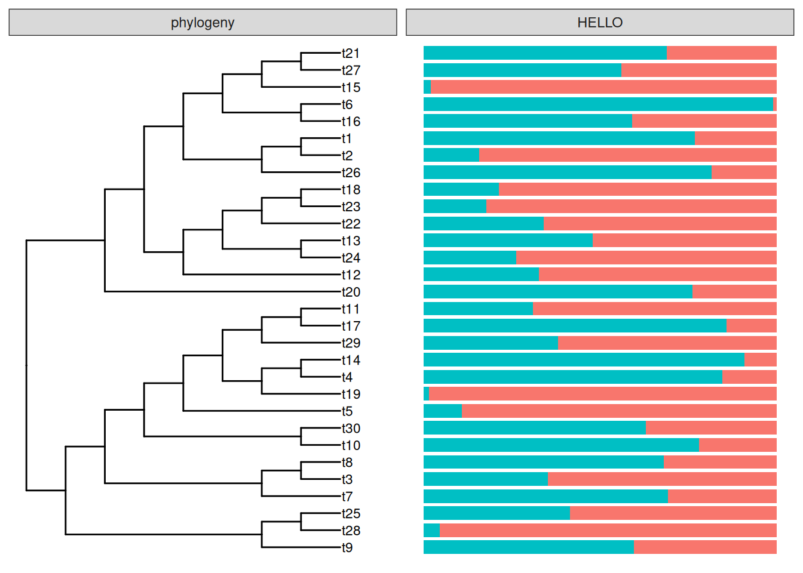
If you want to combine facet_widths() with facet_labeller(), you need to call facet_labeller() to relabel the panels before using facet_widths() to set the relative widths of each panel. Otherwise, it won’t work since the output of facet_widths() is redrawn from grid object.
facet_labeller(p2, c(Tree = "phylogeny")) %>% facet_widths(c(Tree = .4))Warning in x[i] <- value: number of items to replace is not a multiple of
replacement length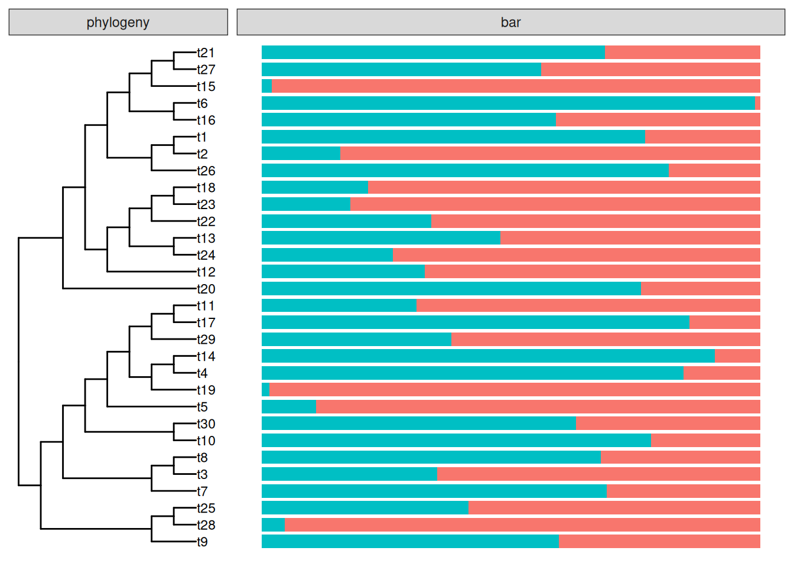
Warning in x[i] <- value: number of items to replace is not a multiple of
replacement length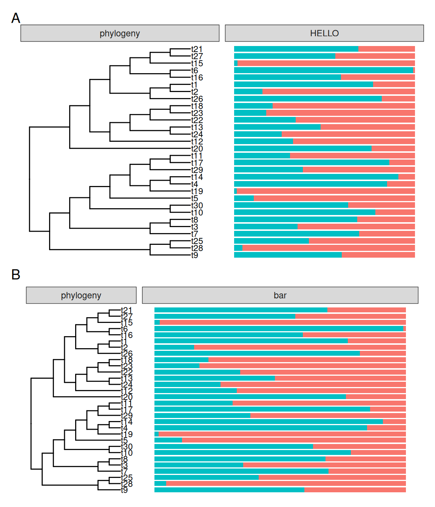
facet_labeller() can combine with facet_widths() to rename facet label and then adjust relative widths (B).Geometric Layers
Subsetting is not supported in layers defined in ggplot2, while it is quite useful in phylogenetic annotation since it allows us to annotate at specific node(s) (e.g., only label bootstrap values that are larger than 75).
In ggtree, we provide several modified versions of layers defined in ggplot2 to support the subset aesthetic mapping, including:
geom_segment2()geom_point2()geom_text2()geom_label2()
These layers works with both ggtree and ggplot2 (Figure ?fig-layer2).
library(ggplot2)
library(ggtree)
data(mpg)
p <- ggplot(data = mpg, mapping = aes(x = displ, y = hwy)) +
geom_point(mapping = aes(color = class)) +
geom_text2(aes(label=manufacturer,
subset = hwy > 40 | displ > 6.5),
nudge_y = 1) +
coord_cartesian(clip = "off") +
theme_light() +
theme(legend.position = c(.85, .75))
p2 <- ggtree(rtree(10)) +
geom_label2(aes(subset = node <5, label = label))Warning in geom_label2(aes(subset = node < 5, label = label)): Ignoring unknown
parameters: `label.size`plot_list(p, p2, ncol=2, tag_levels='A')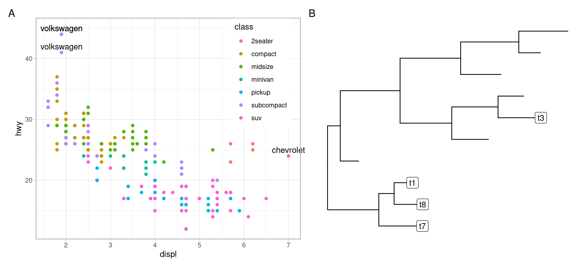
ggplot2 (A) and ggtree (B).Layout Utilities
In session 4.2, we introduce several layouts supported by ggtree. The ggtree package also provides several layout functions that can transform from one to another. Note that not all layouts are supported (see Table ?tbl-layoutLayerTab and Figure ?fig-layoutLayer).
| Layout | Description |
|---|---|
| layout_circular | transform rectangular layout to circular layout |
| layout_dendrogram | transform rectangular layout to dendrogram layout |
| layout_fan | transform rectangular/circular layout to fan layout |
| layout_rectangular | transform circular/fan layout to rectangular layout |
| layout_inward_circular | transform rectangular/circular layout to inward_circular layout |
set.seed(2019)
x <- rtree(20)
p <- ggtree(x)
p + layout_dendrogram()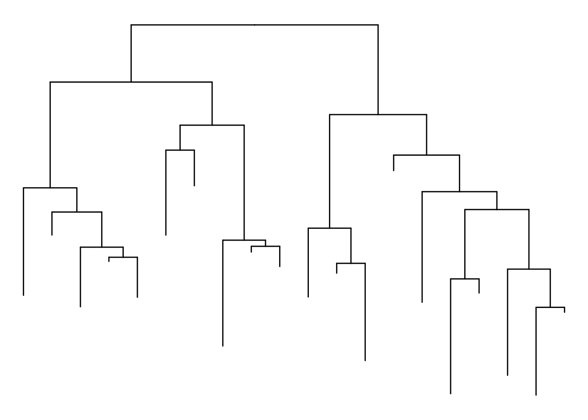
ggtree(x, layout = "circular") + layout_rectangular()Coordinate system already present.
ℹ Adding new coordinate system, which will replace the existing one.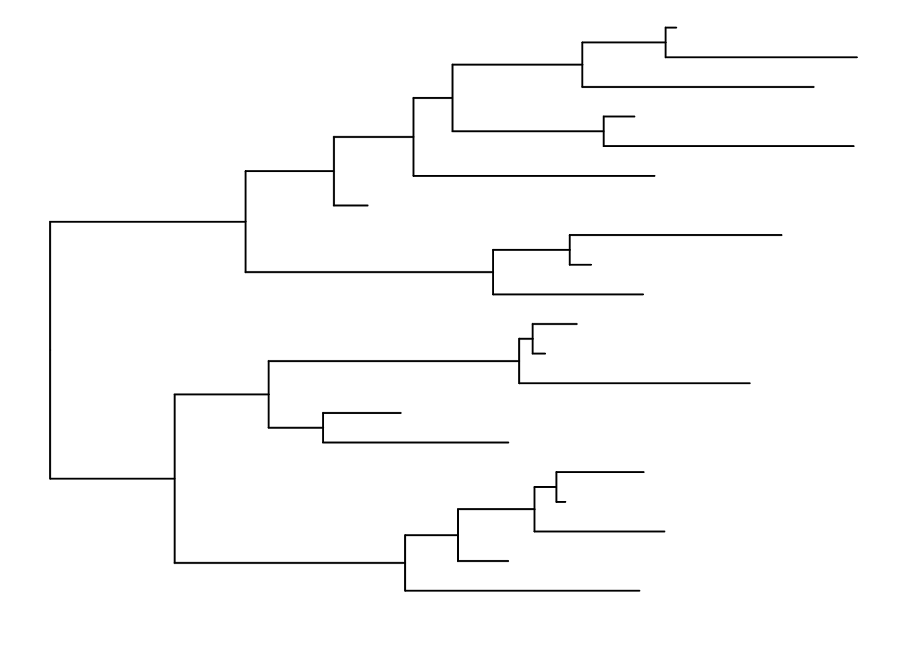
p + layout_circular()Scale for y is already present.
Adding another scale for y, which will replace the existing scale.Warning: Unknown or uninitialised column: `subgroup`.
Unknown or uninitialised column: `subgroup`.
Unknown or uninitialised column: `subgroup`.
Unknown or uninitialised column: `subgroup`.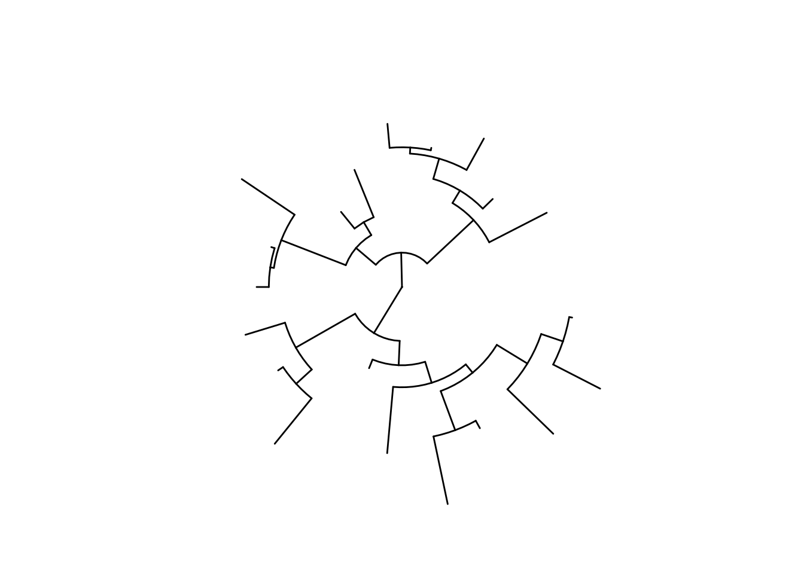
p + layout_fan(angle=90)Scale for y is already present.
Adding another scale for y, which will replace the existing scale.
Scale for y is already present.
Adding another scale for y, which will replace the existing scale.Warning: Unknown or uninitialised column: `subgroup`.
Unknown or uninitialised column: `subgroup`.
Unknown or uninitialised column: `subgroup`.
Unknown or uninitialised column: `subgroup`.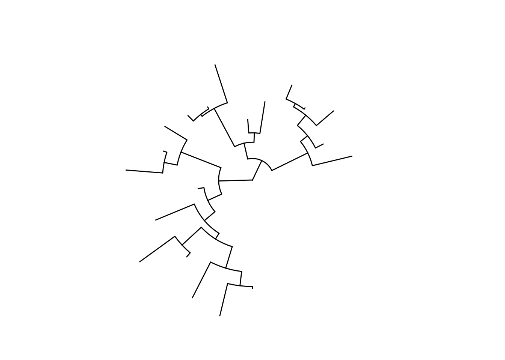
p + layout_inward_circular(xlim=4) + geom_tiplab(hjust=1)Scale for y is already present.
Adding another scale for y, which will replace the existing scale.Warning: Unknown or uninitialised column: `subgroup`.
Unknown or uninitialised column: `subgroup`.
Unknown or uninitialised column: `subgroup`.
Unknown or uninitialised column: `subgroup`.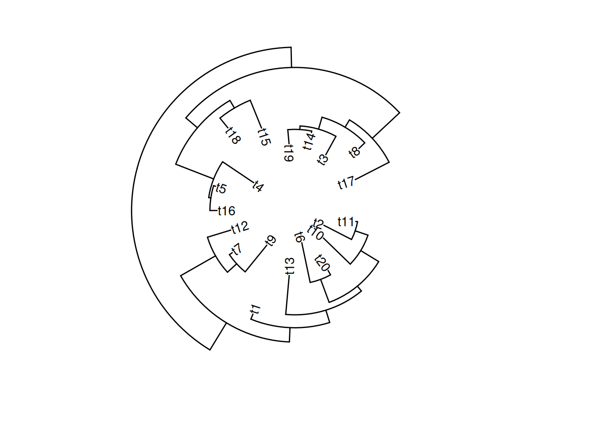
Warning: Unknown or uninitialised column: `subgroup`.
Unknown or uninitialised column: `subgroup`.
Unknown or uninitialised column: `subgroup`.
Unknown or uninitialised column: `subgroup`.
Unknown or uninitialised column: `subgroup`.
Unknown or uninitialised column: `subgroup`.
Unknown or uninitialised column: `subgroup`.
Unknown or uninitialised column: `subgroup`.
Unknown or uninitialised column: `subgroup`.
Unknown or uninitialised column: `subgroup`.
Unknown or uninitialised column: `subgroup`.
Unknown or uninitialised column: `subgroup`.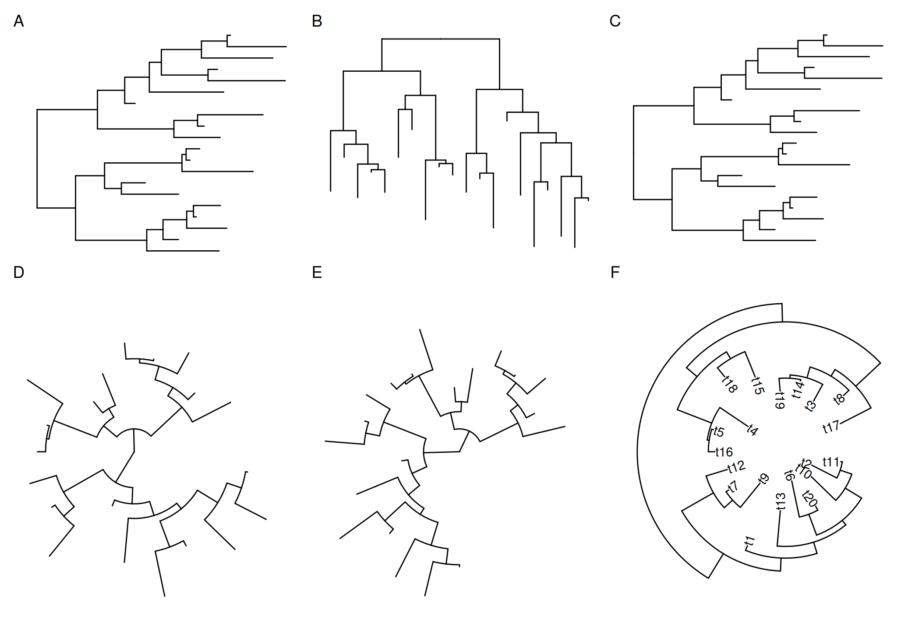
Scale Utilities
The ggtree package provides several scale functions to manipulate the x-axis, including the scale_x_range() documented in session 5.2.4, xlim_tree(), xlim_expand(), ggexpand(), hexpand() and vexpand().
Expand x limit for a specific facet panel
Sometimes we need to set xlim for a specific facet panel (e.g., allocate more space for long tip labels at Tree panel). However, the ggplot2::xlim() function applies to all the panels. The ggtree provides xlim_expand() to adjust xlim for user-specific facet panel. It accepts two parameters, xlim, and panel, and can adjust all individual panels as demonstrated in Figure ?fig-xlimExpandA. If you only want to adjust xlim of the Tree panel, you can use xlim_tree() as a shortcut.
set.seed(2019-05-02)
x <- rtree(30)
p <- ggtree(x) + geom_tiplab()
d <- data.frame(label = x$tip.label,
value = rnorm(30))
p2 <- p + geom_facet(panel = "Dot", data = d,
geom = geom_point, mapping = aes(x = value))
p2 + xlim_tree(6) + xlim_expand(c(-10, 10), 'Dot')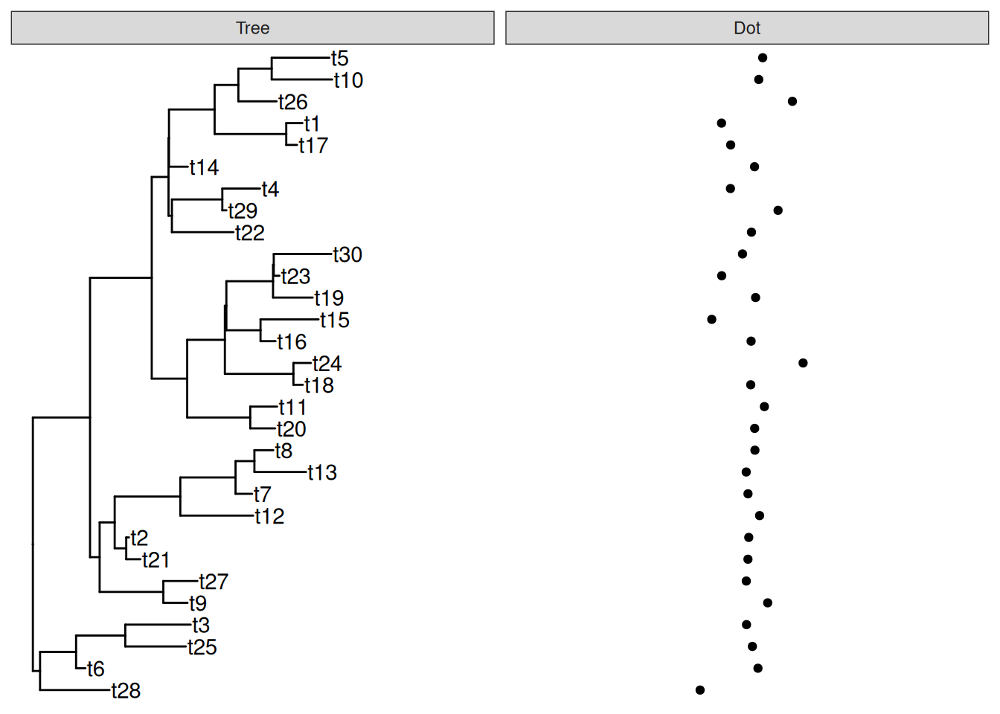
The xlim_expand() function also works with ggplot2::facet_grid(). As demonstrated in Figure ?fig-xlimExpandB, only the xlim of virginica panel was adjusted by xlim_expand().
g <- ggplot(iris, aes(Sepal.Length, Sepal.Width)) +
geom_point() + facet_grid(. ~ Species, scales = "free_x")
g + xlim_expand(c(0, 15), 'virginica')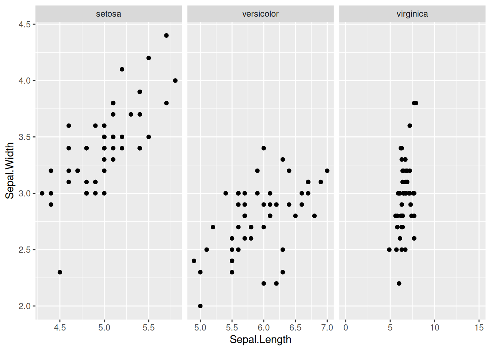
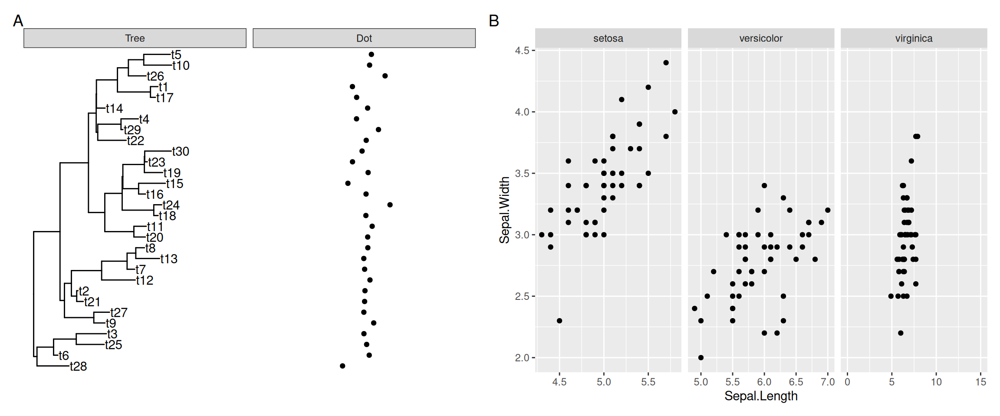
xlim_tree() to set the Tree panel of the ggtree output (A) and xlim_expand() to set the Dot panel of the ggtree output (A) and the Virginica panel of the ggplot output (B).Expand plot limit by the ratio of plot range
The ggplot2 package cannot automatically adjust plot limits and it is very common that long text was truncated. Users need to adjust x (y) limits manually via the xlim() (ylim()) command (see also FAQ: Tip label truncated).
The xlim() (ylim()) is a good solution to this issue. However, we can make it more simple, by expanding the plot panel by a ratio of the axis range without knowing what the exact value is.
We provide hexpand() function to expand x limit by specifying a fraction of the x range and it works for both directions (direction=1 for right-hand side and direction=-1 for left-hand side) (Figure ?fig-hexpand). Another version of vexpand() works with similar behavior for y-axis and the ggexpand() function works for both x- and y-axis (Figure ?fig-phylonetworx).
x$tip.label <- paste0('to make the label longer_', x$tip.label)
p1 <- ggtree(x) + geom_tiplab() + hexpand(.4)
p2 <- ggplot(iris, aes(Sepal.Width, Petal.Width)) +
geom_point() +
hexpand(.2, direction = -1) +
vexpand(.2)
plot_list(p1, p2, tag_levels="A", widths=c(.6, .4))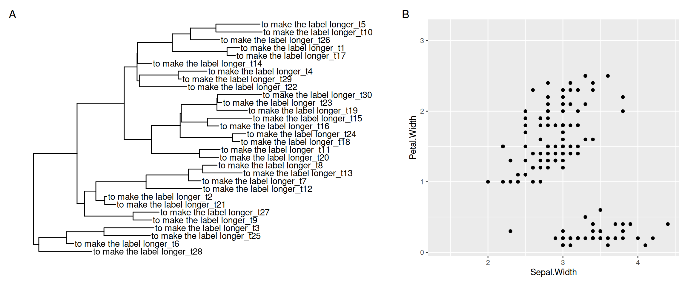
Tree data utilities
Filter tree data
The ggtree package defined several geom layers that support subsetting tree data. However, many other geom layers that didn’t provide this feature, are defined in ggplot2 and its extensions. To allow filtering tree data with these layers, ggtree provides an accompanying function, td_filter() that returns a function that works similar to dplyr::filter() and can be passed to the data parameter in geom layers to filter ggtree plot data as demonstrated in Figure ?fig-tdFilter.
library(tidytree)tidytree v0.4.7 Learn more at https://yulab-smu.top/contribution-tree-data/
Please cite:
LG Wang, TTY Lam, S Xu, Z Dai, L Zhou, T Feng, P Guo, CW Dunn, BR
Jones, T Bradley, H Zhu, Y Guan, Y Jiang, G Yu. treeio: an R package
for phylogenetic tree input and output with richly annotated and
associated data. Molecular Biology and Evolution. 2020, 37(2):599-603.
doi: 10.1093/molbev/msz240
Attaching package: 'tidytree'The following object is masked from 'package:stats':
filterset.seed(1997)
tree <- rtree(50)
p <- ggtree(tree)
selected_nodes <- offspring(p, 67)$node
p + geom_text(aes(label=label),
data=td_filter(isTip &
node %in% selected_nodes),
hjust=0) +
geom_nodepoint(aes(subset = node ==67),
size=5, color='blue')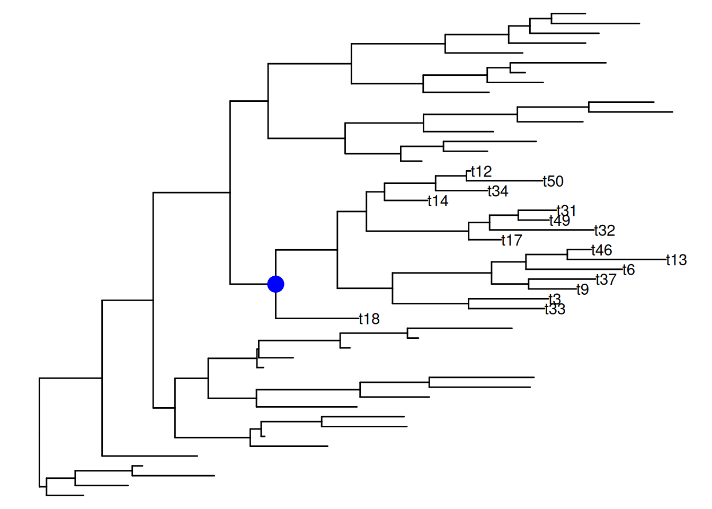
Flatten list-column tree data
The ggtree plot data is a tidy data frame where each row represents a unique node. If multiple values are associated with a node, the data can be stored as nested data (i.e., in a list-column).
set.seed(1997)
tr <- rtree(5)
d <- data.frame(id=rep(tr$tip.label,2),
value=abs(rnorm(10, 6, 2)),
group=c(rep("A", 5),rep("B",5)))
require(tidyr)Loading required package: tidyr
Attaching package: 'tidyr'The following object is masked from 'package:reshape2':
smithsThe following object is masked from 'package:ggtree':
expandd2 <- nest(d, value =value, group=group)
## d2 is a nested data
d2# A tibble: 5 × 3
id value group
<chr> <list> <list>
1 t2 <tibble [2 × 1]> <tibble [2 × 1]>
2 t1 <tibble [2 × 1]> <tibble [2 × 1]>
3 t5 <tibble [2 × 1]> <tibble [2 × 1]>
4 t4 <tibble [2 × 1]> <tibble [2 × 1]>
5 t3 <tibble [2 × 1]> <tibble [2 × 1]>Nested data is supported by the operator, %<+%, and can be mapped to the tree structure. If a geom layer can’t directly support visualizing nested data, we need to flatten the data before applying the geom layer to display it. The ggtree package provides a function, td_unnest(), which returns a function that works similar to tidyr::unnest() and can be used to flatten ggtree plot data as demonstrated in Figure ?fig-tdUnnestA.
All tree data utilities provide a .f parameter to pass a function to pre-operate the data. This creates the possibility to combine different tree data utilities as demonstrated in Figure ?fig-tdUnnestB.
p <- ggtree(tr) %<+% d2
p2 <- p +
geom_point(aes(x, y, size= value, colour=group),
data = td_unnest(c(value, group)), alpha=.4) +
scale_size(range=c(3,10), limits=c(3, 10))
p3 <- p +
geom_point(aes(x, y, size= value, colour=group),
data = td_unnest(c(value, group),
.f = td_filter(isTip & node==4)),
alpha=.4) +
scale_size(range=c(3,10), limits=c(3, 10))
plot_list(p2, p3, tag_levels = 'A')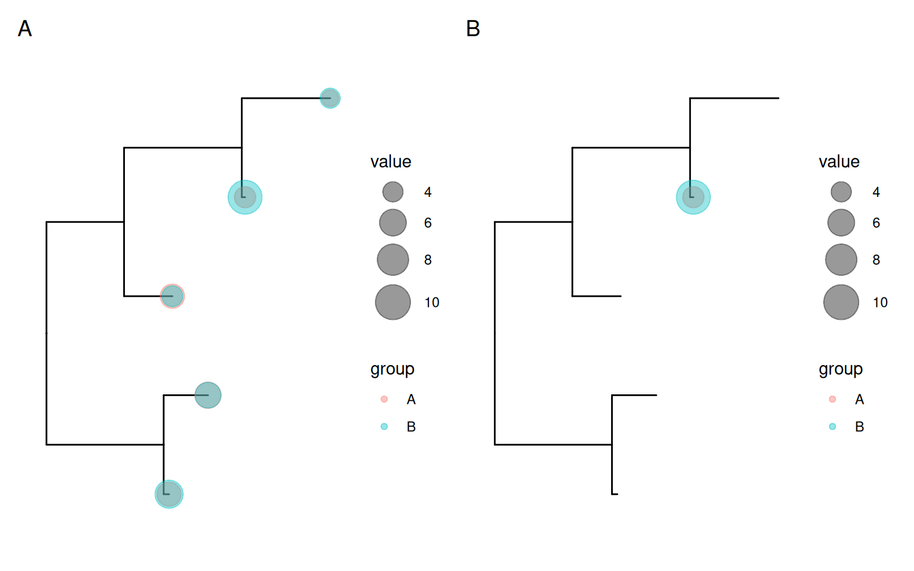
td_unnest() and two circle points were displayed on each tip simultaneously (A). Different tree data utilities can be combined to work together, e.g., filter data by td_filter(), and then flatten it by td_unnest()) (B).Tree Utilities
Extract tip order
To create composite plots, users need to re-order their data manually before creating tree-associated graphs. The order of their data should be consistent with the tip order presented in the ggtree() plot. For this purpose, we provide the get_taxa_name() function to extract an ordered vector of tips based on the tree structure plotted by ggtree().
set.seed(123)
tree <- rtree(10)
p <- ggtree(tree) + geom_tiplab() +
geom_hilight(node = 12, extendto = 2.5)
x <- paste("Taxa order:",
paste0(get_taxa_name(p), collapse=', '))
p + labs(title=x)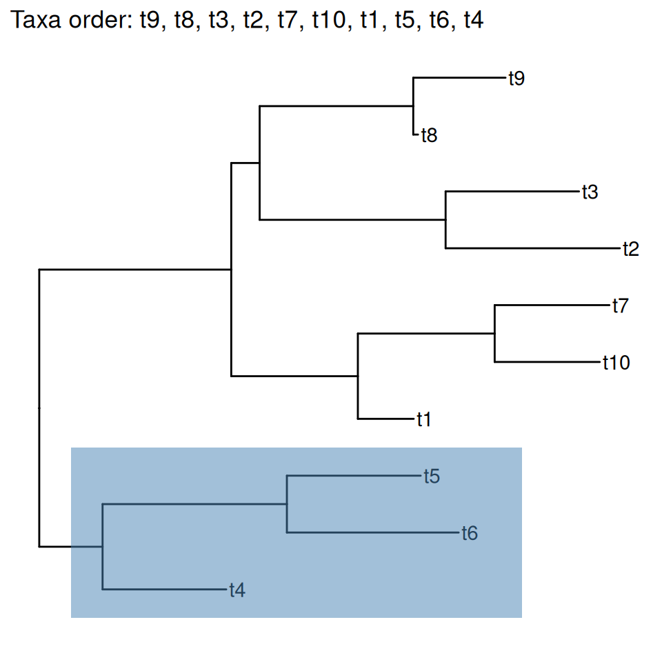
get_taxa_name() function.The get_taxa_name() function will return a vector of ordered tip labels according to the tree structure displayed in Figure ?fig-tiporder.
get_taxa_name(p) [1] "t9" "t8" "t3" "t2" "t7" "t10" "t1" "t5" "t6" "t4" If users specify a node, the get_taxa_name() will extract the tip order of the selected clade (i.e., highlighted region in Figure ?fig-tiporder).
get_taxa_name(p, node = 12)[1] "t5" "t6" "t4"Padding taxa labels
The label_pad() function adds padding characters (default is ·) to taxa labels.
set.seed(2015-12-21)
tree <- rtree(5)
tree$tip.label[2] <- "long string for test"
d <- data.frame(label = tree$tip.label,
newlabel = label_pad(tree$tip.label),
newlabel2 = label_pad(tree$tip.label, pad = " "))
print(d) label newlabel newlabel2
1 t1 ··················t1 t1
2 long string for test long string for test long string for test
3 t2 ··················t2 t2
4 t4 ··················t4 t4
5 t3 ··················t3 t3This feature is useful if we want to align tip labels to the end as demonstrated in Figure ?fig-labelpad. Note that in this case, monospace font should be used to ensure the lengths of the labels displayed in the plot are the same.
p <- ggtree(tree) %<+% d + xlim(NA, 5)
p1 <- p + geom_tiplab(aes(label=newlabel),
align=TRUE, family='mono',
linetype = "dotted", linesize = .7)
p2 <- p + geom_tiplab(aes(label=newlabel2),
align=TRUE, family='mono',
linetype = NULL, offset=-.5) + xlim(NA, 5)Scale for x is already present.
Adding another scale for x, which will replace the existing scale.plot_list(p1, p2, ncol=2, tag_levels = "A") 
Interactive ggtree Annotation
link = ifelse (knitr::is_latex_output(), "https://twitter.com/drandersgs/status/965996335882059776", "#plotly")
plotly_ggtree_link <- paste0("an [interactive phylogenetic tree](", link, ")")The ggtree package supports interactive tree annotation or manipulation by implementing an identify() method. Users can click on a node to highlight a clade, to label or rotate it, etc. Users can also use the plotly package to convert a ggtree object to a plotly object to quickly create
an [interactive phylogenetic tree](#plotly).
Video of using identify() to interactively manipulate a phylogenetic tree can be found on Youtube and Youku: